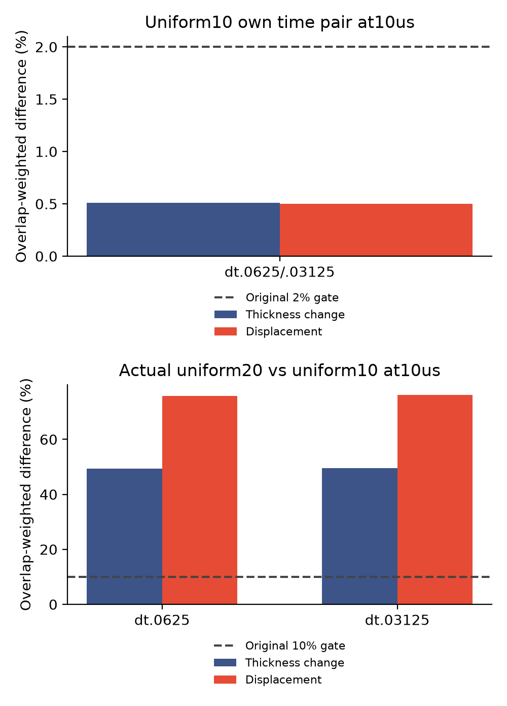

实际耦合算例 · 全域20→10微米 · 2026-11-13
整张膜加密，
早期答案会更接近吗？
本批处在原始C1规划的分辨率验证阶段：独立预测交换系数、生成薄膜元的厚度比、整体条纹和保留工况验证都尚未完成。查看与原规划逐项对应的证据和缺口。
01 · 这次改的是全域细度
此前背景加密和同分辨率扰动检查都暴露了运动差异。现在保持材料、方程、几何尺寸、物理接口和初始准备程序，均匀间距从20降至10微米，粒子数从144增至544。20微米参照直接读取已冻结的轨迹，没有重算。
新增两次单步启动与两组10微秒模拟；时间步为0.0625和0.03125微秒。原有膜厚变化／位移重叠面积判据，以及2%时间、10%空间门槛都保留。任何未通过、超时和预算跳过项记录在原始状态中。
02 · 第一观测点的原判据

| 比较 | 膜厚变化差异 | 位移差异 | 该检查点门槛 |
|---|---|---|---|
| 时间配对 | 0.51% | 0.50% | 通过 |
| 空间配对，dt=0.0625微秒 | 49.43% | 75.85% | 未通过 |
| 空间配对，dt=0.03125微秒 | 49.56% | 76.12% | 未通过 |
时间配对只在10微秒可用。即使这里通过，也不能补成50、200微秒已经通过；若时间配对未过，空间差异仍只能作为未验收诊断。
这些百分比比较的是变化量：在小时间步的相同重叠权重下，膜厚变化的差异RMS为6.56纳米，参照变化RMS为13.23纳米；位移差异RMS为17.08纳米，参照位移RMS为22.44纳米。百分比不是总膜厚或膜宽的变化比例；维度量与原判据完全同权重，未改判。
03 · 真实粒子与膜厚变化

04 · 哪些核对已做，哪些没做？
新增原生运行4组，完成4组，4组通过原生收支／能量／力门槛；共482个接受步。保存步独立标量核对6个、机械核对6个。原生计算累计52.2分钟。
之前执行的24项原生检查通过日志与未变二进制哈希复核，本批没有重新运行这些单元测试。独立保存步核对与原生每步账本分别记录。这个短时释放算例不是长期框架净排液或实验对照；流向与最小膜厚见原生观测量。
切面通量恢复：另做独立诊断
沿用已有的独立SI压力梯度／迁移率恢复，以及实际节点速度切面积分，与离散账本分别比较。下面只有10微秒的一个保存步，不能称为时间L2误差；原始率值与单位均保留，账本率接近零时相对数值也可能较大。
| 布局／时间步 | 相对液量率差异 | 材料输运率差异 |
|---|---|---|
| 均匀10微米，dt=0.0625微秒 | 0.62% | 7.48% |
| 均匀10微米，dt=0.03125微秒 | 0.62% | 8.41% |
| 均匀20微米，dt=0.0625微秒 | 2.43% | 145.32% |
| 均匀20微米，dt=0.03125微秒 | 2.43% | 150.89% |
这是非相容恢复场的诊断，不是独立Stokes法向通量或牵引力验证，也没有用守恒余量定义新通量。检查范围 · 完整维度量与单步差异。
下一步先检查分辨率与离散问题，并核实计算瓶颈。两档时间步下的空间差异仍然很大；长时预算需要在这些结果基础上决定。
05 · 怎样推进到50和200微秒？
下面只用本批实测10微秒成本线性外推，并乘1.3余量。后续非线性求解成本可能变化；这些是资源估计，实际系统负载会影响本机计时，尚未启动对应长作业，也不是精度保证或受控性能比较。是否延长由本批时间与空间结果决定；空间差异较大时，先处理分辨率与离散问题。超过两小时的作业启动前须设置每半小时监视。
| 时间步 | 目标时长／微秒 | 含余量成本估计 | 半小时监视 |
|---|---|---|---|
| 0.0625微秒 | 50 | 0.76小时 | 按最终预算再核实 |
| 0.0625微秒 | 200 | 3.02小时 | 需要 |
| 0.03125微秒 | 50 | 4.89小时 | 需要 |
| 0.03125微秒 | 200 | 19.56小时 | 需要 |